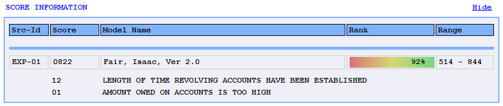
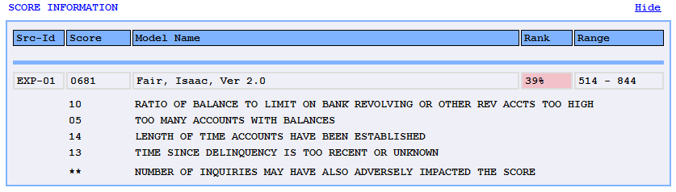
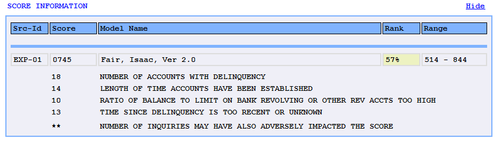
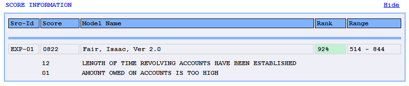

|
Navigation: CreditSharp Features > CreditSharp Outputs > HTML Samples > Score percentile displays
|


|
|
Navigation: CreditSharp Features > CreditSharp Outputs > HTML Samples > Score percentile displays
|
|
For most bureau score models, a additional data element is available which indicates how the current score ranks in relation to the scores calculated for all consumers. This element, the Percentile (found in the ComScore and MrgScore segments), reports what percent of scores for the current model are below the score for the given consumer. For example, a percentile value of 85 would indicate that the associated score was higher than 85% of all other scores for that model.
This value can be shown in the Html styled outputs as plain text, or optionally, using either a color or gradient background to add a visual element for sowing the relative strength of a given score. This feature is controlled using the following FormatOptionsHtml settings:
HtmlScoreRankDisplay |
An enumeration indicating if Standard, Shaded or Gradient displays should be used. |
ScoreRankLower |
When the Shaded display option is chosen, the numeric value supplied here indicates the lowest percentile that will be considered average.
Average scores are shaded yellow. Below average scores are shaded red and above average scores are shaded green. |
ScoreRankUpper |
When the Shaded display option is chosen, the numeric value supplied here indicates the highest percentile that will be considered average.
Average scores are shaded yellow. Below average scores are shaded red and above average scores are shaded green. |
The Html report snippets below demonstrate how each non-standard score percentile would be seen:
Gradient option:

With the gradient option, the position of the actual rank (percentage) also floats from left to right with 1% being all the way to the left and 99% all the way to the right.
Shaded option (below average):

Shaded option (average):

Shaded option (above average):
